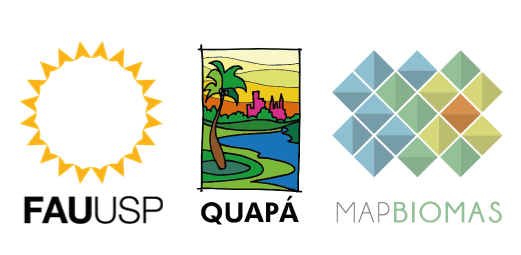

class: center, middle, inverse, title-slide .title[ # <div> <div class="blocks">  </div> </div> <h2 class="title toc-ignore"> VISUALIZAÇÃO MAPAS <br> GOOGLE EARTH ENGINE </h2> ] .author[ ### Laboratório QUAPÁ | FAUUSP ] --- ###PARA VISUALIZAR OS MAPAS: **1.** [SE CADASTRAR NO GOOGLE EARTH ENGINE](#cadastroGEE) <br> **2.** [EXECUTAR O CÓDIGO](#execucao) <img src="GEE.png" width="100%" style="display: block; margin: auto;" /> --- name: cadastroGEE ### CADASTRO GOOGLE EARTH ENGINE **1.** Acessar [o site do Google Earth Engine](https://earthengine.google.com/) e clicar em **Sign Up** <img src="signup1.png" width="100%" /> --- name: contagoogle <br> **2.** Fazer login na conta Google .left-column[ **OBS.: De preferência, usar uma conta institucional.** <br> <br> **É preciso ter/criar uma conta Google (que não requer um email Gmail).** ].right-column[ <img src="signup2.png" width="auto" height="500" style="display: block; margin: auto;" /> ] --- <br> **3.** Preencher as informações solicitadas <img src="signup3.png" width="auto" height="500" style="display: block; margin: auto;" /> --- <br> **4.** Aceitar o termo de serviço / Clicar CAPTCHA / Enviar cadastro <img src="signup4.png" width="100%" /> --- <br> **5.** Aguardar <img src="signup5.png" width="100%" /> --- name: execucao class: inverse center middle ## EXECUÇÃO DO CÓDIGO --- ### VISUALIZANDO O MAPA PARA ANO E CIDADE DE INTERESSE **1.** Clicar no [link para acessar o código](https://code.earthengine.google.com/c62310a9ed389a176ccad8f1b8135ee9) <img src="codigo1.png" width="100%" /> --- **2.** O ano padrão é **2020**. Para alterar o ano de visualização é necessário colocar o ano de interesse na linha 5 do código. *Obs.: É possível ver imagens a partir de 2013.* <img src="codigo2.png" width="100%" /> --- **3.** É possivel navegar até a cidade de interesse através do campo de busca do Google Earth Engine **(1)**, ou pelo visualizador da plataforma **(2)**. <img src="codigo3.png" width="100%" /> --- **4.** Para ver se o Mapa gerado corresponde à imagem de satélite original, podemos desligar ou mudar a opacidade das camadas no visualizador da plataforma. <img src="codigo4.png" width="100%" /> --- **5.** O triângulo abaixo demonstra o que deveriam significar as cores do mapa. <img src="triangulo.png" width="auto" height="550" style="display: block; margin: auto;" /> --- class: center, middle ### OBRIGADA! Qualquer dúvida enviar e-mail para: <br> **ma.hirye@alumni.usp.br** <br> **julia.cansado@usp.br** <br>